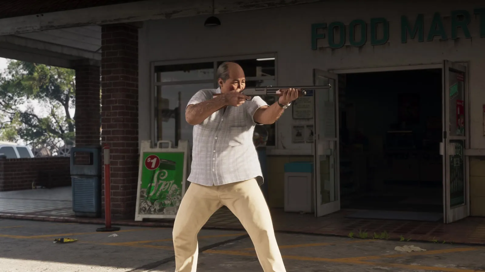
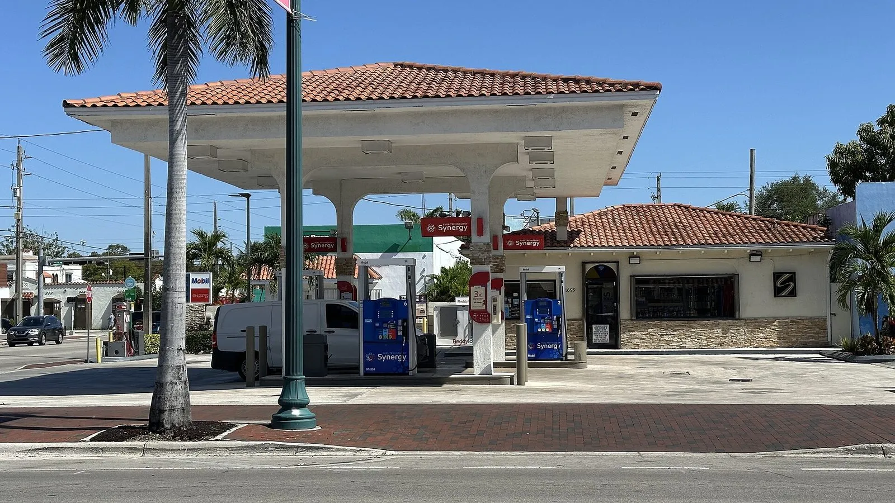
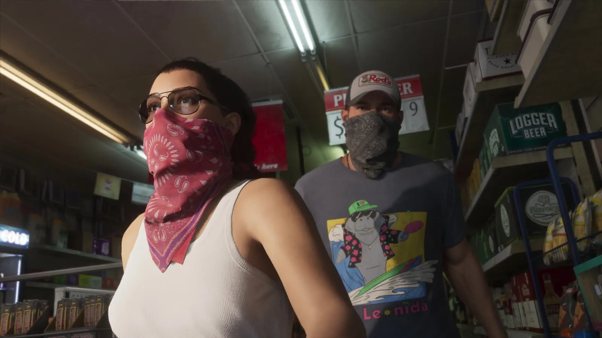
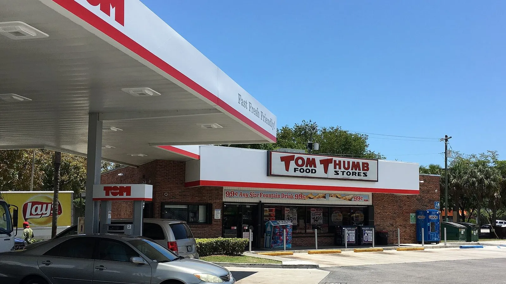

Ограбление магазина в GTA 6 и закон Флориды о ночных магазинах
Опубликовано:
Ограбления небольших магазинов — тема, с которой во Флориде борются отдельным законом. Но конкретного случая Rockstar не повторяет: это общий сюжет, а не копия.


- В «Расширенном показе» GTA 6 двое в банданах заходят в магазин с вывеской OPEN 7 DAYS и грабят его.
- Из магазина FOOD MART за ними выбегает мужчина с ружьём.
- Во Флориде для продуктовых магазинов, открытых ночью, есть отдельная статья закона — 812.173.
- Она требует камеры с записью, сейф с ограниченным доступом и табличку «в кассе 50 долларов или меньше».
- Окна нельзя тонировать, а у входа должна быть разметка роста.
Что в игре
Около 11:26 «Расширенного показа» герои подходят к небольшому магазину у дороги: стеклянные двери, надпись OPEN 7 DAYS. На девушке красная бандана, на её спутнике — серая. Внутри обычный ночной магазин: холодильники с напитками, полки с чипсами, банкомат, касса.
Дальше — ограбление у кассы, побег и машина у входа. Под конец из магазина с вывеской FOOD MART выходит мужчина в светлой рубашке и целится из ружья.

Что в реальности
Во Флориде такие магазины защищает отдельная статья уголовного кодекса — 812.173 (Convenience business security). Она касается магазинов, которые торгуют продуктами (или продуктами и бензином), открыты в любое время между 23:00 и 5:00 и имеют лицензию штата на продажу алкоголя или табака. Закон перечисляет, что в них обязано быть:
- камеры, которые записывают и позволяют потом найти изображение;
- сейф для выручки или устройство, к которому ограничен доступ;
- освещённая парковка;
- заметная табличка у входа: в кассе 50 долларов или меньше;
- окна без плакатов, через которые кассу видно с улицы;
- разметка роста у входа;
- правила, ограничивающие наличные после 23:00.
Тонировать окна так, чтобы кассу не было видно, запрещено. Кроме того, в магазине должна быть тихая тревога, которая уходит в полицию или частную охрану.

Если в магазине уже случались определённые тяжкие преступления, закон позволяет обязать его к дополнительным мерам: ставить двух продавцов на ночь, кассу за защитным ограждением или закрываться на ночь.
Совпадает и отличается
| Флорида | GTA 6 | |
|---|---|---|
| Небольшой магазин у дороги, работает каждый день | Под действие закона попадают магазины, работающие ночью | 🟢 Вывеска OPEN 7 DAYS |
| Камеры, сейф, табличка «$50 или меньше» | Обязательны по статье 812.173 | 🔵 В кадрах не разобрать |
| Продавец с ружьём | — | 🟡 Мужчина с ружьём у FOOD MART |
- Ограбление магазина в GTA 6 — все кадры и таймкоды
Источники: Rockstar Games — «Grand Theft Auto VI: An Extended Look» (11:26–12:15); The Florida Legislature — Florida Statutes § 812.173 «Convenience business security» и § 812.171 (определения); Wikimedia Commons — фото Phillip Pessar (CC BY 2.0).
Реальные фото: Фото: Phillip Pessar, CC BY 2.0 · Wikimedia Commons; Фото: Phillip Pessar, CC BY 2.0 · Wikimedia Commons. Кадры игры: Rockstar Games.
Каждый день — одно сравнение: кадр игры рядом с реальным фото. Подписывайтесь:
YouTubeInstagramTikTok

 vs
vs
 vs
vs